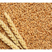
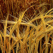
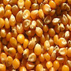

Ürünler
Buğday
|
 | Buğdaygiller familyasından bütün dünyada ıslahı yapılmış tek yıllık otsu bitki cinsi. Değişik araştırmacıların yaptıkları araştırmaların ışığında buğdayın gen merkezi olarak |
Arpa
|
 | Buğdaygillerden taneleri malt ve yem olarak kullanılan önemli bir tahıl bitkisidir. |
Mısır
|
 | Mısır, genellikle çok nemli iklim bölgelerinde yetiştirilebilen bir tarım bitkisi. |